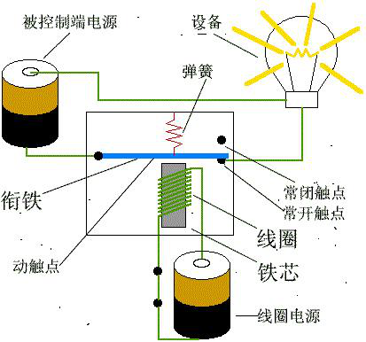

项目10 定时浇花装置¶
一、概述¶
相信大家的家中应该都会养有一些植物吧，想要植物生长的旺盛我们就需要定期给他们浇水，但是我们可能常常会忘记给家中的植物浇水，可能就会导致植株枯萎，为了避免出现这类问题，我们可以自己设计一个定时浇花装置。

二、项目实施¶
（1）驱动继电器¶

（2）用继电器控制水泵¶
要实现浇花的功能那么就会需要使用到水泵来帮我们实现，但是水泵的工作电压大多是12V的，但是我们使用的arduino uno的输出电压是5v，无法直接驱动水泵，这时我们就需要借助继电器来驱动水泵了.

程序编写：¶
1、浇花需要每隔一定的时间再执行，那如何控制间隔时间呢？用之前项目中最常用的 time.sleep（） 行不行？
用延时功能来控制是可以实现功能的，但是无法精确的定位在指定的时间，限制非常多，每次重启程序延时的时间就会重新计算，影响浇水的效率。
2、这里我们将使用time函数的time.strftime()功能来定位时间，如示例中，在每天下午15点30分10秒的时候打印“浇花”。在实际使用中将继电器执行功能加进来就可以了。
import time
while True:
time_now = time.strftime("%H:%M:%S", time.localtime()) # 刷新
if time_now == "15:30:00": #此处设置每天定时的时间
print("浇花")
time.sleep(1)
3、加入继电器实现每天定时浇水功能。
import time
from pinpong.pinpong import PinPong,Pin
board = PinPong("uno") #初始化，选择板型和端口号，不输入则留空进行自动识别
led = Pin(board, Pin.D13, Pin.OUT) #引脚初始化为电平输出
while True:
time_set = time.strftime("%H:%M:%S",time.localtime()) #刷新
if time_set == "10:00:00": #设定为每天早上十点钟浇水
led.value(1) #输出高电平
print("浇花") #终端打印信息
time.sleep(5) #等待5秒 保持状态
else:
led.value(0) #输出低电平
time.sleep(1) #等待1秒 保持状态
三、代码分析¶
import time
from pinpong.pinpong import PinPong,Pin
board = PinPong("uno") #初始化，选择板型和端口号，不输入则留空进行自动识别
led = Pin(board, Pin.D13, Pin.OUT) #引脚初始化为电平输出
while True:
time_set = time.strftime("%H:%M:%S",time.localtime()) #刷新
if time_set == "10:00:00": #设定为每天早上十点钟浇水
led.value(1) #输出高电平
print("浇花") #终端打印信息
time.sleep(5) #等待5秒 保持状态
else:
led.value(0) #输出低电平
time.sleep(1) #等待1秒 保持状态
time库函数
time库在我们之前的案例中一直有使用到的一个库，但是我们大多数情况只用到了其中的延时的功能，其实还有很多功能，让我们来了解一下吧。
time库是python中处理时间的标准库
1、time库的使用
时间获取——-time() ctime() gmtime()
时间格式化——-strftime() strptime()
程序计时——-sleep() perf_counter()
2、时间获取函数
time()——-获取当前时间戳，浮点数形式
ctime()——-以可读的方式返回字符串时间
gmtime()——-计算机可以处理的时间格式
3、时间格式化
strftime()——-将时间进行合理输出
strptime()——-自定义时间
4、程序计时
perf_counter()——-测量时间函数
sleep()——-产生时间函数,模拟休眠的时间，单位是秒，可以是浮点数
四、硬件分析¶
继电器
继电器（英文名称：relay）是一种电控制器件，是当输入量（激励量）的变化达到规定要求时，在电气输出电路中使被控量发生预定的阶跃变化的一种电器。它具有控制系统（又称输入回路）和被控制系统（又称输出回路）之间的互动关系。通常应用于自动化的控制电路中，它实际上是用小电流去控制大电流运作的一种“自动开关”。故在电路中起着自动调节、安全保护、转换电路等作用。
光看文字描述有点难以理解，下面看看图示帮助理解继电器的作用。继电器工作原理图：

这里有两个电源回路，一个是线圈部分的回路另一个是设备（灯珠）端的回路。我们把线圈铁芯这端理解成掌控板这端，设备（灯珠）端我们理解成水泵；线圈电源就是掌控板的输出电压5V，被控制端电源电压就是我们驱动水泵的12V电源。我们通过5V的电压控制线圈铁芯这个电磁铁，当继电器高电平时，线圈通电，将衔铁吸引，这样设备端的回路就接通了。
继电器的作用
继电器是具有隔离功能的自动开关元件，广泛应用于遥控、遥测、通讯、自动控制、机电一体化及电力电子设备中，是最重要的控制元件之一。
继电器一般都有能反映一定输入变量（如电流、电压、功率、阻抗、频率、温度、压力、速度、光等）的感应机构（输入部分）；有能对被控电路实现“通”、“断”控制的执行机构（输出部分）；在继电器的输入部分和输出部分之间，还有对输入量进行耦合隔离，功能处理和对输出部分进行驱动的中间机构（驱动部分）。
作为控制元件，概括起来，继电器有如下几种作用：
1）扩大控制范围：例如，多触点继电器控制信号达到某一定值时，可以按触点组的不同形式，同时换接、开断、接通多路电路。
2）放大：例如，灵敏型继电器、中间继电器等，用一个很微小的控制量，可以控制很大功率的电路。
3）综合信号：例如，当多个控制信号按规定的形式输入多绕组继电器时，经过比较综合，达到预定的控制效果。
4）自动、遥控、监测：例如，自动装置上的继电器与其他电器一起，可以组成程序控制线路，从而实现自动化运行。